sampling.Rmdsample_* functions
A total of 5 sample functions currently exist in the package:
sample_srs() - simple random sampling
sample_systematic()- systematic sampling in a grid or hexagon tessellation
sample_strat() - stratified sampling within a sraster
sample_clhs() - Latin hypercube sampling algorithm
A feature of the sample_* functions is the ability to define access corridors. Users can supply a road access network (must be sf line objects) and define buffers around access where samples should be excluded and included.
Important additional parameters when access is provided are:
buff_inner - An inner buffer that defines the distance from access where samples cannot be taken (i.e. if you don’t want samples within 50 m of your access layer set buff_inner = 50).
buff_outer - Maximum distance samples can be located from access (i.e. if you don’t want samples more than 200 meters far from your access layer set buff_outer = 200)
sample_srs
We provided a very simple example of using the sample_srs() function in vignette("sgsR"). We provide some additional examples below.
Notice that the input for sample_srs() is raster. This means that either sraster or an mraster are supported.
#--- perform simple random sampling ---#
sample_srs(raster = sraster, # input sraster
nSamp = 200, # number of desired samples
plot = TRUE) # plot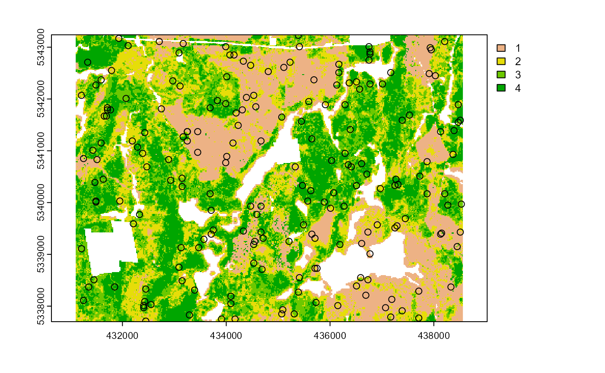
#> Simple feature collection with 200 features and 0 fields
#> Geometry type: POINT
#> Dimension: XY
#> Bounding box: xmin: 431150 ymin: 5337710 xmax: 438550 ymax: 5343090
#> CRS: +proj=utm +zone=17 +ellps=GRS80 +towgs84=0,0,0,0,0,0,0 +units=m +no_defs
#> First 10 features:
#> geometry
#> 1 POINT (432330 5342750)
#> 2 POINT (432330 5342750)
#> 3 POINT (434190 5339290)
#> 4 POINT (431170 5338570)
#> 5 POINT (431490 5342110)
#> 6 POINT (434610 5342190)
#> 7 POINT (434990 5337950)
#> 8 POINT (432310 5339590)
#> 9 POINT (435190 5338010)
#> 10 POINT (435970 5341070)
sample_srs(raster = mraster, # input mraster
nSamp = 200, # number of desired samples
access = access, # define access road network
mindist = 200, # minimum distance samples must be apart from one another
buff_inner = 50, # inner buffer - no samples within this distance from road
buff_outer = 200, # outer buffer - no samples further than this distance from road
plot = TRUE) # plot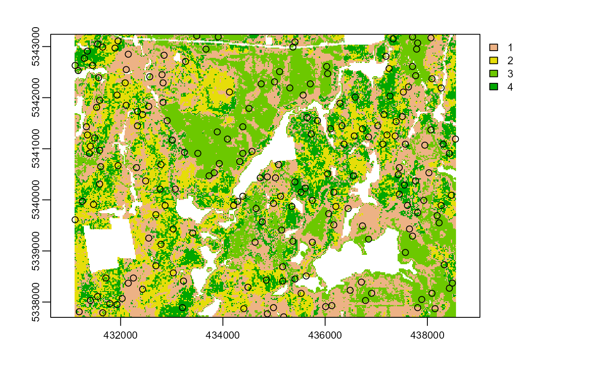
#> Simple feature collection with 200 features and 0 fields
#> Geometry type: POINT
#> Dimension: XY
#> Bounding box: xmin: 431110 ymin: 5337710 xmax: 438550 ymax: 5343210
#> CRS: +proj=utm +zone=17 +ellps=GRS80 +towgs84=0,0,0,0,0,0,0 +units=m +no_defs
#> First 10 features:
#> geometry
#> 1 POINT (434110 5341210)
#> 2 POINT (435470 5342750)
#> 3 POINT (433090 5341010)
#> 4 POINT (432350 5339010)
#> 5 POINT (434410 5338530)
#> 6 POINT (438030 5343050)
#> 7 POINT (431970 5338230)
#> 8 POINT (431870 5340270)
#> 9 POINT (431910 5338450)
#> 10 POINT (436610 5338010)
sample_srs(raster = sraster, # input
nSamp = 200, # number of desired samples
access = access, # define access road network
buff_inner = 50, # inner buffer - no samples within this distance from road
buff_outer = 200, # outer buffer - no samples further than this distance from road
plot = TRUE, # plot
filename = tempfile(fileext = ".shp")) # write output samples to file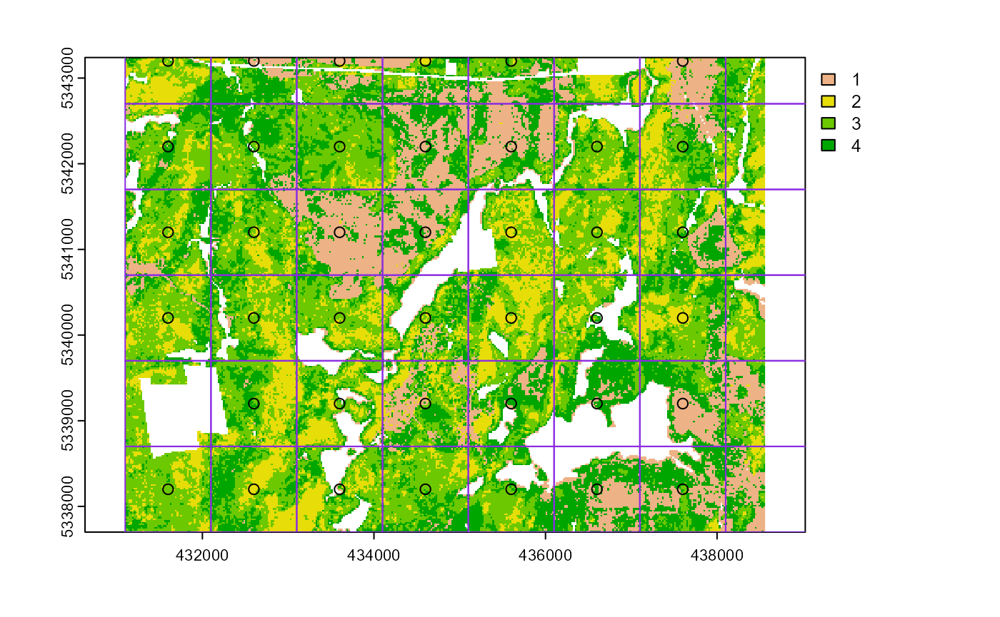
#> Writing layer `file58206554b0c' to data source
#> `C:\Users\tgood.stu\AppData\Local\Temp\RtmpAFtbKs\file58206554b0c.shp' using driver `ESRI Shapefile'
#> Writing 200 features with 0 fields and geometry type Point.
#> Simple feature collection with 200 features and 0 fields
#> Geometry type: POINT
#> Dimension: XY
#> Bounding box: xmin: 431170 ymin: 5337710 xmax: 438530 ymax: 5343230
#> CRS: +proj=utm +zone=17 +ellps=GRS80 +towgs84=0,0,0,0,0,0,0 +units=m +no_defs
#> First 10 features:
#> geometry
#> 1 POINT (438050 5338970)
#> 2 POINT (438050 5338970)
#> 3 POINT (432130 5340050)
#> 4 POINT (437710 5338010)
#> 5 POINT (432810 5342970)
#> 6 POINT (431690 5340710)
#> 7 POINT (434370 5338430)
#> 8 POINT (432390 5338790)
#> 9 POINT (438150 5341510)
#> 10 POINT (432810 5341570)sample_systematic
The sample_systematic() function applies systematic sampling across an area where the cellsize parameter defines resolution of the tessellation. Tesselation shape options are defined by the square parameter, which is a regular grid when TRUE (default) and hexagonal when FALSE. The location of samples can also be adjusted using the locations parameter, where centers takes the center, corners takes all corners, and random takes a random location within each tessellation.
#--- perform grid sampling ---#
sample_systematic(raster = sraster, # input sraster
cellsize = 1000, # grid distance
plot = TRUE) # plot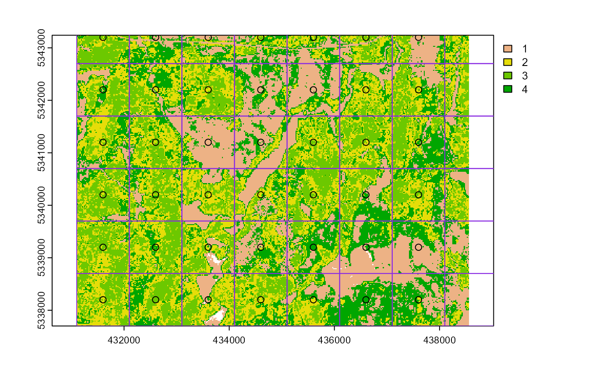
#> Simple feature collection with 40 features and 0 fields
#> Geometry type: POINT
#> Dimension: XY
#> Bounding box: xmin: 431600 ymin: 5338200 xmax: 437600 ymax: 5343200
#> CRS: +proj=utm +zone=17 +ellps=GRS80 +towgs84=0,0,0,0,0,0,0 +units=m +no_defs
#> First 10 features:
#> geometry
#> 1 POINT (431600 5338200)
#> 2 POINT (432600 5338200)
#> 3 POINT (433600 5338200)
#> 4 POINT (434600 5338200)
#> 5 POINT (435600 5338200)
#> 6 POINT (436600 5338200)
#> 7 POINT (437600 5338200)
#> 8 POINT (432600 5339200)
#> 9 POINT (433600 5339200)
#> 10 POINT (434600 5339200)
#--- perform grid sampling ---#
sample_systematic(raster = sraster, # input sraster
cellsize = 500, # grid distance
square = FALSE, # hexagonal tessellation
location = "random", # random sample within tessellation
plot = TRUE) # plot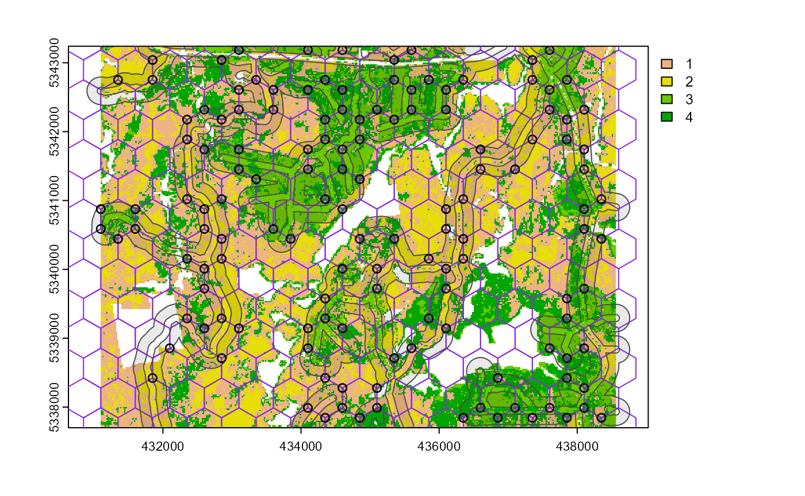
#> Simple feature collection with 173 features and 0 fields
#> Geometry type: POINT
#> Dimension: XY
#> Bounding box: xmin: 431101.6 ymin: 5337712 xmax: 438506.7 ymax: 5343214
#> CRS: +proj=utm +zone=17 +ellps=GRS80 +towgs84=0,0,0,0,0,0,0 +units=m +no_defs
#> First 10 features:
#> geometry
#> 1 POINT (431112.6 5337836)
#> 2 POINT (431182.3 5338630)
#> 3 POINT (431259.7 5339309)
#> 4 POINT (431101.6 5342210)
#> 5 POINT (431436.9 5338297)
#> 6 POINT (431281.4 5339065)
#> 7 POINT (431462.3 5339710)
#> 8 POINT (431280.2 5340697)
#> 9 POINT (431472.6 5342586)
#> 10 POINT (431771.8 5337811)
sample_systematic(raster = sraster, # input sraster
cellsize = 500, # grid distance
access = access, # define access road network
buff_inner = 50, # inner buffer - no samples within this distance from road
buff_outer = 200, # outer buffer - no samples further than this distance from road
square = FALSE, # hexagonal tessellation
location = "corners", # take corners instead of centers
plot = TRUE)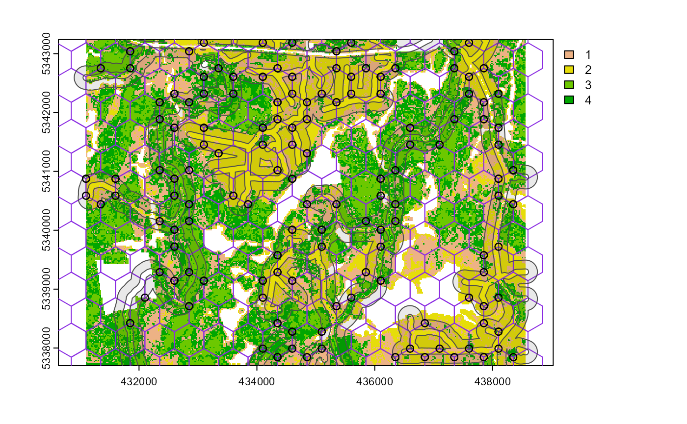
#> Simple feature collection with 470 features and 0 fields
#> Geometry type: POINT
#> Dimension: XY
#> Bounding box: xmin: 431100 ymin: 5337844 xmax: 438350 ymax: 5343185
#> CRS: +proj=utm +zone=17 +ellps=GRS80 +towgs84=0,0,0,0,0,0,0 +units=m +no_defs
#> First 10 features:
#> geometry
#> 1 POINT (431100 5340875)
#> 2 POINT (431100 5340587)
#> 3 POINT (431100 5340587)
#> 4 POINT (431350 5340442)
#> 5 POINT (431100 5340875)
#> 6 POINT (431100 5340875)
#> 7 POINT (431350 5342752)
#> 8 POINT (431350 5340442)
#> 9 POINT (431100 5340587)
#> 10 POINT (431100 5340875)sample_strat
The sample_strat() function contains a hierarchical sampling algorithm originally developed my Martin Queinnec.
Queinnec, M., White, J. C., & Coops, N. C. (2021). Comparing airborne and spaceborne photon-counting LiDAR canopy structural estimates across different boreal forest types. Remote Sensing of Environment, 262(August 2020), 112510.
The algorithm uses a moving window (wrow and wcol parameters) to filter the input sraster for locations where stratum pixels are spatially grouped rather than dispersed individually across the landscape.
The sampling is performed in 2 stages:
Rule 1 - Sample within spatially grouped stratum pixels. Moving window defined by wrow and wcol.
Rule 2 - If no more samples exist to satisfy desired sampling count, individual stratum pixels are sampled.
The rule applied to select a particular sample is defined in the rule attribute of output samples. We give a few examples below:
#--- perform stratified sampling random sampling ---#
sample_strat(sraster = sraster, # input sraster
nSamp = 200, # desired sample number
plot = TRUE) # plot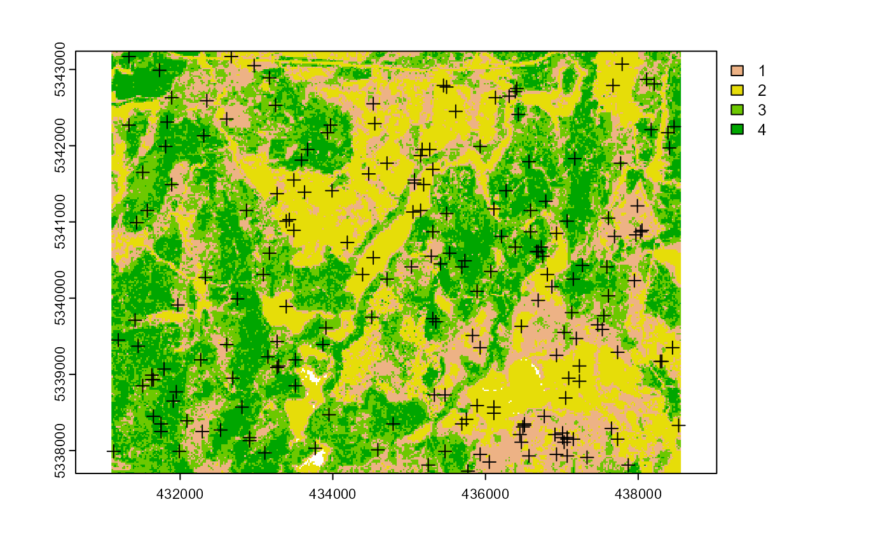
#> Simple feature collection with 199 features and 3 fields
#> Geometry type: POINT
#> Dimension: XY
#> Bounding box: xmin: 431150 ymin: 5337730 xmax: 438530 ymax: 5343210
#> CRS: +proj=utm +zone=17 +ellps=GRS80 +towgs84=0,0,0,0,0,0,0 +units=m +no_defs
#> First 10 features:
#> strata type rule geometry
#> x 1 new rule1 POINT (432010 5338770)
#> x1 1 new rule1 POINT (438530 5342570)
#> x2 1 new rule1 POINT (437050 5341010)
#> x3 1 new rule1 POINT (431770 5341650)
#> x4 1 new rule1 POINT (431690 5338490)
#> x5 1 new rule1 POINT (437250 5341150)
#> x6 1 new rule1 POINT (433350 5337990)
#> x7 1 new rule1 POINT (436690 5341250)
#> x8 1 new rule1 POINT (435970 5340590)
#> x9 1 new rule1 POINT (432850 5340270)In some cases, a user may wish to include an existing sample data set within the algorithm. In order to adjust the total number of samples needed per stratum to reflect those already present in existing, we can use the utility function extract_strata().
This function takes an input sraster and the existing sample data set and extracts the stratum for each sample. These samples can then be input into the sample_strat() function which adjusts total required sample per class based on representation in existing.
#--- extract strata values to existing samples ---#
e.sr <- extract_strata(sraster = sraster, # input sraster
existing = existing) # existing samples to add strata value to
e.sr
#> Simple feature collection with 200 features and 1 field
#> Geometry type: POINT
#> Dimension: XY
#> Bounding box: xmin: 431150 ymin: 5337710 xmax: 438490 ymax: 5343190
#> Projected CRS: UTM Zone 17, Northern Hemisphere
#> First 10 features:
#> strata geometry
#> 1 2 POINT (432790 5341030)
#> 2 1 POINT (433410 5340310)
#> 3 4 POINT (434330 5338570)
#> 4 4 POINT (431690 5341130)
#> 5 2 POINT (434950 5337950)
#> 6 4 POINT (435810 5338870)
#> 7 2 POINT (431690 5340830)
#> 8 1 POINT (437210 5341370)
#> 9 3 POINT (435030 5342810)
#> 10 2 POINT (438330 5339110)Notice that e.sr now has an attribute named strata. If that parameter is not there, sample_strat() will give an error.
sample_strat(sraster = sraster, # input sraster
nSamp = 200, # desired sample number
access = access, # define access road network
existing = e.sr, # existing samples with strata values
mindist = 200, # minimum distance samples must be apart from one another
buff_inner = 50, # inner buffer - no samples within this distance from road
buff_outer = 200, # outer buffer - no samples further than this distance from road
plot = TRUE) # plot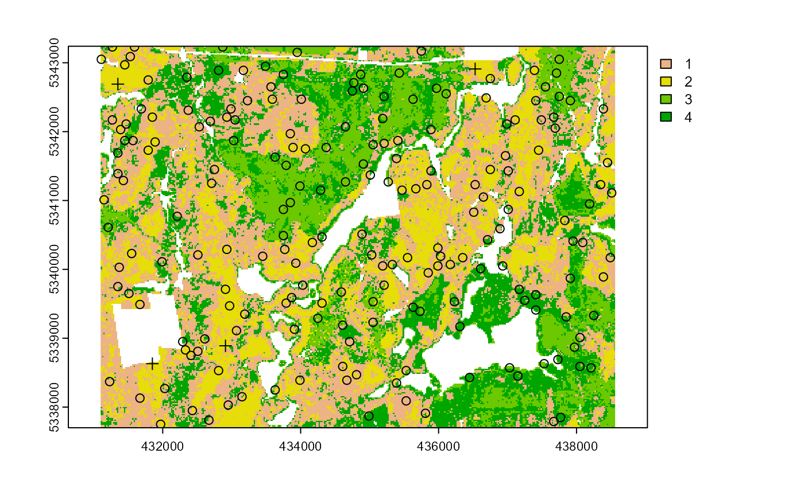
#> Simple feature collection with 399 features and 3 fields
#> Geometry type: POINT
#> Dimension: XY
#> Bounding box: xmin: 431150 ymin: 5337710 xmax: 438530 ymax: 5343210
#> CRS: +proj=utm +zone=17 +ellps=GRS80 +towgs84=0,0,0,0,0,0,0 +units=m +no_defs
#> First 10 features:
#> strata type rule geometry
#> 2 1 existing existing POINT (433410 5340310)
#> 8 1 existing existing POINT (437210 5341370)
#> 13 1 existing existing POINT (435630 5337870)
#> 16 1 existing existing POINT (433510 5338810)
#> 26 1 existing existing POINT (432210 5341510)
#> 27 1 existing existing POINT (434350 5339510)
#> 41 1 existing existing POINT (431570 5340390)
#> 53 1 existing existing POINT (437310 5342790)
#> 56 1 existing existing POINT (432770 5340250)
#> 62 1 existing existing POINT (436870 5341370)The mindist parameter defined in the above example specifies the minimum euclidian distance that samples must be apart from one another.
Notice that the sample outputs have type and rule attributes which outline whether samples are existing or new and whether rule1 or rule2 were used to select individual samples.
sample_strat(sraster = sraster, # input
nSamp = 200, # desired sample number
access = access, # define access road network
existing = e.sr, # existing samples with strata values
include = TRUE, # include existing plots in nSamp total
buff_inner = 50, # inner buffer - no samples within this distance from road
buff_outer = 200, # outer buffer - no samples further than this distance from road
filename = tempfile(fileext = ".shp"), # write output samples to file
plot = TRUE) # plot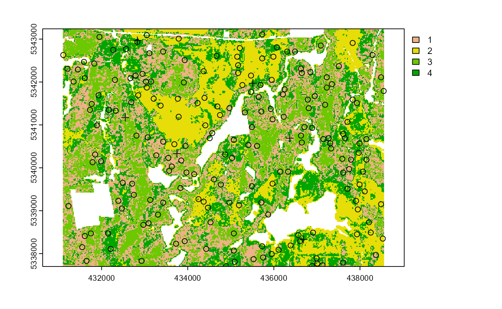
#> Writing layer `file58201ef04345' to data source
#> `C:\Users\tgood.stu\AppData\Local\Temp\RtmpAFtbKs\file58201ef04345.shp' using driver `ESRI Shapefile'
#> Writing 199 features with 3 fields and geometry type Point.
#> Simple feature collection with 199 features and 3 fields
#> Geometry type: POINT
#> Dimension: XY
#> Bounding box: xmin: 431150 ymin: 5337710 xmax: 438490 ymax: 5343190
#> CRS: +proj=utm +zone=17 +ellps=GRS80 +towgs84=0,0,0,0,0,0,0 +units=m +no_defs
#> First 10 features:
#> strata type rule geometry
#> 2 1 existing existing POINT (433410 5340310)
#> 8 1 existing existing POINT (437210 5341370)
#> 13 1 existing existing POINT (435630 5337870)
#> 16 1 existing existing POINT (433510 5338810)
#> 26 1 existing existing POINT (432210 5341510)
#> 27 1 existing existing POINT (434350 5339510)
#> 41 1 existing existing POINT (431570 5340390)
#> 53 1 existing existing POINT (437310 5342790)
#> 56 1 existing existing POINT (432770 5340250)
#> 62 1 existing existing POINT (436870 5341370)The include parameter determines whether existing samples should be included in the total count of samples defined by nSamp. By defaults include = FALSE.
sample_clhs
The sample_clhs() function implements conditioned latin hypercube (clhs) sampling functionality. A number of other functions in the sgsR package help to provide guidance on clhs sampling including calculate_lhsPop() and calculate_lhsOpt(). Be sure to check out those functions for better understanding of how to optimize sample numbers.
Syntax for this function is similar to others shown above, though parameters like iter, which define the number of iterations within the Metropolis-Hastings process are important to consider. In these examples we use a low iter value because it takes less time to run. Default values for iter within the clhs package are 10,000.
sample_clhs(mraster = mraster, # input
nSamp = 200, # desired sample number
plot = TRUE, # plot
iter = 100) # number of iterations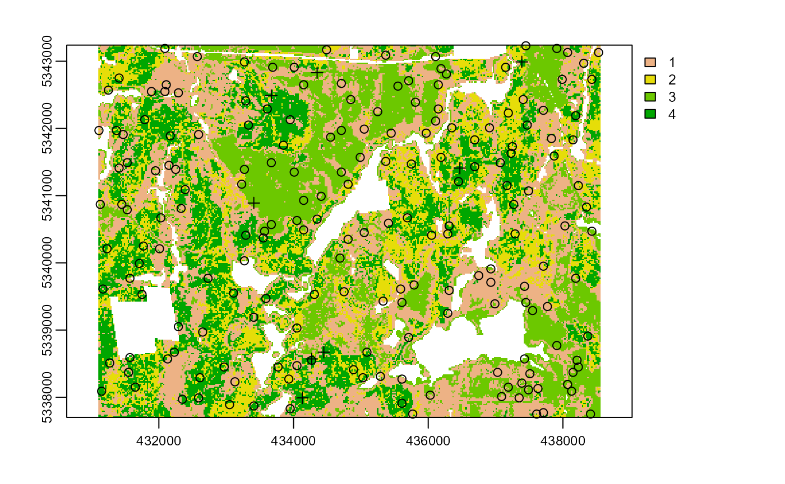
sample_clhs(mraster = mraster, # input
nSamp = 300, # desired sample number
existing = existing, # existing samples
iter = 100, # number of iterations
details = TRUE, # output details
plot = TRUE) # clhs details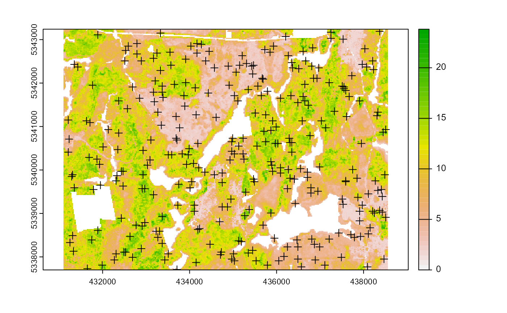
sample_clhs(mraster = mraster, # input
nSamp = 300, # desired sample number
iter = 100, # number of iterations
existing = existing, # existing samples
access = access, # define access road network
buff_inner = 100, # inner buffer - no samples within this distance from road
buff_outer = 300, # outer buffer - no samples further than this distance from road
plot = TRUE) # plot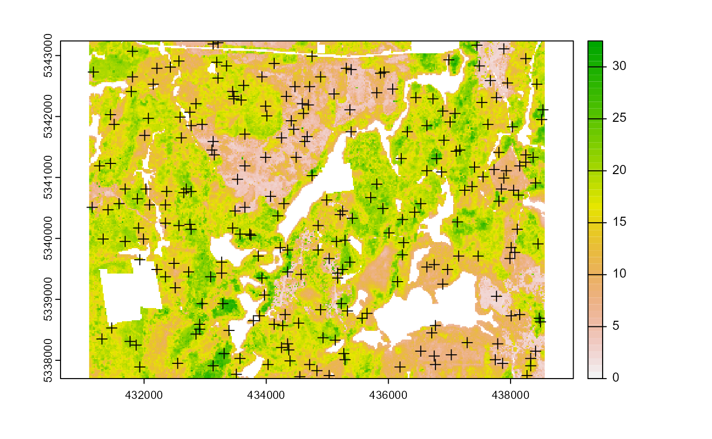
The cost parameter defines an mraster covariate to be used to constrain the clhs sampling. This could be any number of variables. An example could be the distance a pixel is from road access (see example below), terrain slope, the output from calculate_coobs(), or many others.
#--- cost constrained examples ---#
#--- calculate distance to access layer for each pixel in mr ---#
mr.c <- calculate_distance(raster = mraster, # input
access = access,
plot = TRUE) # define access road network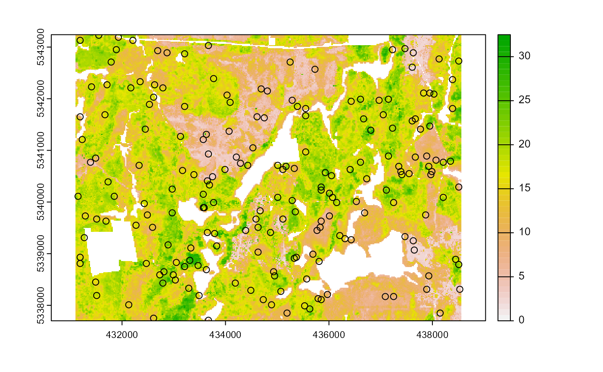
sample_clhs(mraster = mr.c, # input
nSamp = 250, # desired sample number
iter = 100, # number of iterations
cost = "dist2access", # cost parameter - name defined in calculate_distance()
plot = TRUE) # plot
sample_clhs(mraster = mr.c, # input
nSamp = 250, # desired sample number
existing = existing, # existing samples
iter = 100, # number of iterations
cost = "dist2access", # cost parameter - name defined in calculate_distance()
plot = TRUE) # plot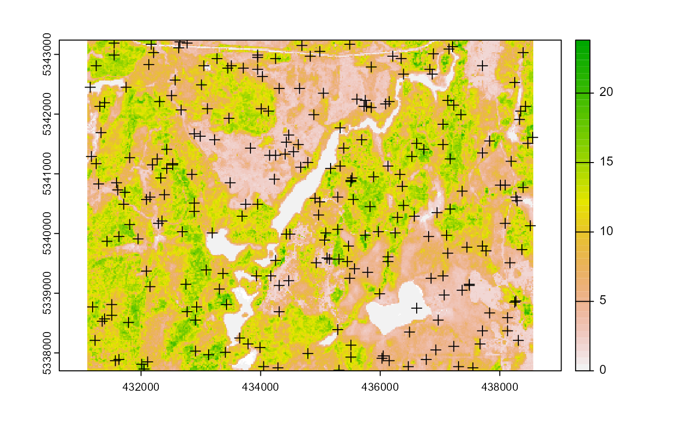
sample_balanced
The sample_balanced() algorithm performs the balanced sampling methodology from the stratifyR / SamplingBigData packages.
sample_balanced(mraster = mraster, # input
nSamp = 200, # desired sample number
plot = TRUE) # plot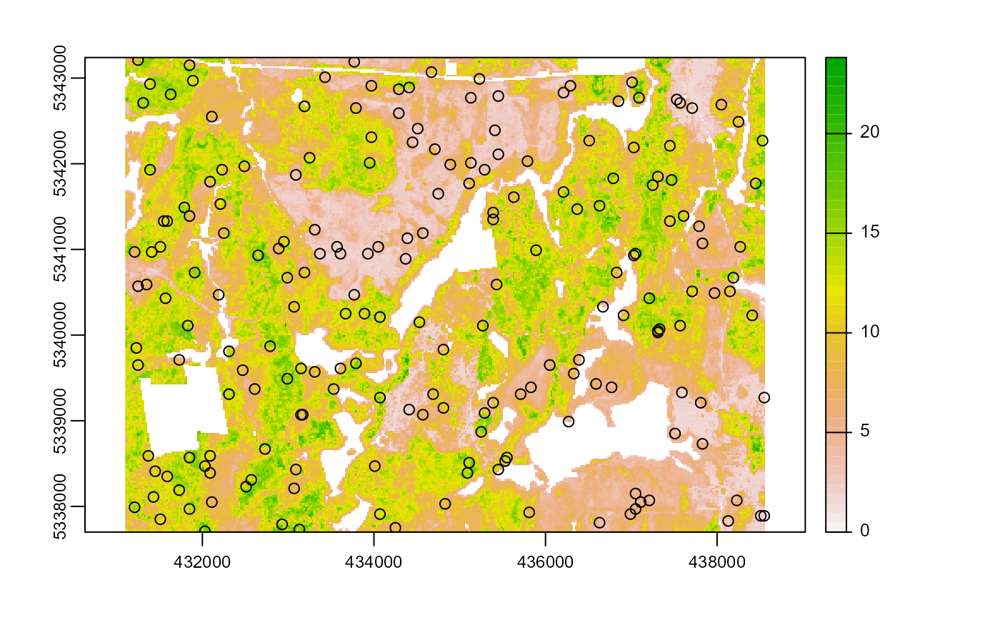
#> Simple feature collection with 200 features and 0 fields
#> Geometry type: POINT
#> Dimension: XY
#> Bounding box: xmin: 431110 ymin: 5337790 xmax: 438530 ymax: 5343090
#> CRS: +proj=utm +zone=17 +ellps=GRS80 +towgs84=0,0,0,0,0,0,0 +units=m +no_defs
#> First 10 features:
#> geometry
#> 1 POINT (435290 5343090)
#> 2 POINT (431850 5343070)
#> 3 POINT (433090 5343070)
#> 4 POINT (431270 5343050)
#> 5 POINT (437050 5343050)
#> 6 POINT (437550 5343030)
#> 7 POINT (436550 5342970)
#> 8 POINT (436070 5342950)
#> 9 POINT (433850 5342930)
#> 10 POINT (436690 5342910)
sample_balanced(mraster = mraster, # input
nSamp = 100, # desired sample number
algorithm = "lcube", # algorithm type
access = access, # define access road network
buff_inner = 50, # inner buffer - no samples within this distance from road
buff_outer = 200) # outer buffer - no samples further than this distance from road
#> Simple feature collection with 100 features and 0 fields
#> Geometry type: POINT
#> Dimension: XY
#> Bounding box: xmin: 431130 ymin: 5337770 xmax: 438390 ymax: 5343190
#> CRS: +proj=utm +zone=17 +ellps=GRS80 +towgs84=0,0,0,0,0,0,0 +units=m +no_defs
#> First 10 features:
#> geometry
#> 1 POINT (432710 5339730)
#> 2 POINT (435610 5338850)
#> 3 POINT (434990 5341910)
#> 4 POINT (438290 5339350)
#> 5 POINT (433750 5340350)
#> 6 POINT (435010 5340510)
#> 7 POINT (437470 5339070)
#> 8 POINT (434490 5342750)
#> 9 POINT (434110 5337930)
#> 10 POINT (437470 5342010)sample_ahels
The sample_ahels() function performs the adapted Hypercube Evaluation of a Legacy Sample (ahels) algorithm using existing sample data and an mraster. New samples are allocated based on quantile ratios between the existing sample and mraster covariate dataset.
This algorithm:
Determines the quantile distributions of existing samples and mraster covariates.
Determines quantiles where there is a disparity between samples and covariates.
Prioritizes sampling within those quantile to improve representation.
To use the function, the user will first specify the number of quantiles (nQuant) followed by either the nSamp (total number of desired samples to be added) or threshold (proportional representation between sample and covariate quantiles - default is 0.9) parameters. It is recommended to use threshold values at or below 0.9 as higher values can currently cause the algorithm to add samples repeatedly.
sample_ahels(mraster = mraster[[1:3]], # input mraster - first 3 layers only
existing = existing, # existing samples
plot = TRUE) # plot#> Simple feature collection with 278 features and 4 fields
#> Geometry type: POINT
#> Dimension: XY
#> Bounding box: xmin: 431130 ymin: 5337710 xmax: 438530 ymax: 5343210
#> CRS: +proj=utm +zone=17 +ellps=GRS80 +towgs84=0,0,0,0,0,0,0 +units=m +no_defs
#> First 10 features:
#> type zmax zmean zsd geometry
#> 1 existing 8.73 74.1 4.13 POINT (432790 5341030)
#> 2 existing 12.87 90.9 4.41 POINT (433410 5340310)
#> 3 existing 11.04 76.1 3.11 POINT (434330 5338570)
#> 4 existing 10.74 93.6 4.11 POINT (431690 5341130)
#> 5 existing 9.03 78.8 3.96 POINT (434950 5337950)
#> 6 existing 9.46 91.5 3.88 POINT (435810 5338870)
#> 7 existing 7.54 84.1 4.09 POINT (431690 5340830)
#> 8 existing 15.77 93.1 4.14 POINT (437210 5341370)
#> 9 existing 3.37 61.6 1.16 POINT (435030 5342810)
#> 10 existing 8.25 61.9 4.21 POINT (438330 5339110)Notice that no threshold, nSamp, or nQuant were defined. That's because defaults are threshold = 0.9 and nQuant = 10.
The first matrix output shows the quantile ratios between sample and covariates. A value of 1.0 means that samples and covariates are equally represented. Values above 1.0 are over represented in the sample, less than 1 under represented in the sample.
sample_ahels(mraster = mraster[[1:3]], # input mraster - first 3 layers only
existing = existing, # existing samples
nQuant = 20, # define 20 quantiles
nSamp = 300, # total samples desired
filename = tempfile(fileext = ".shp")) # write samples to disc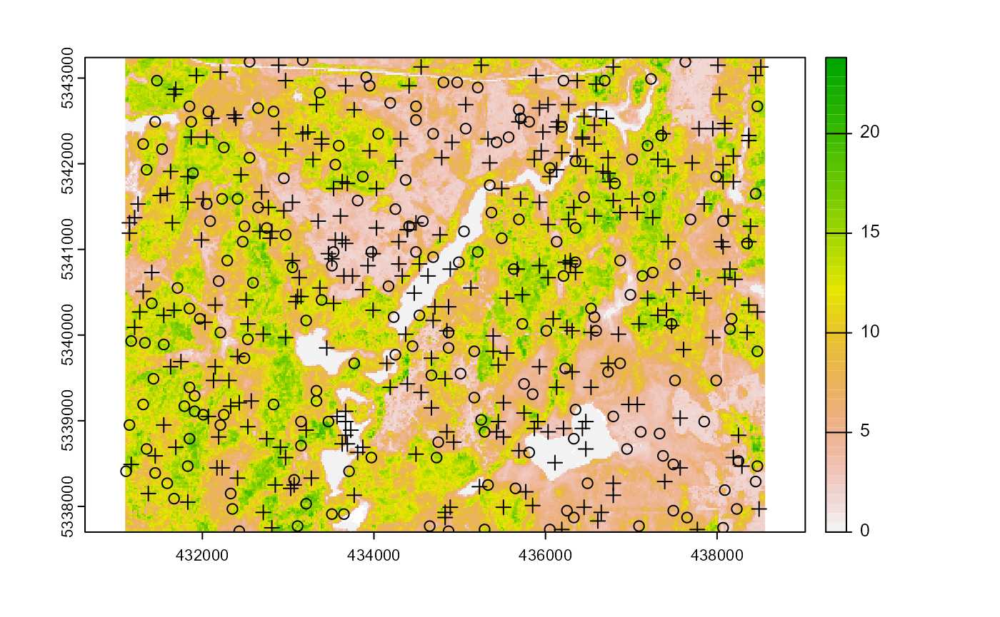
#> Simple feature collection with 500 features and 4 fields
#> Geometry type: POINT
#> Dimension: XY
#> Bounding box: xmin: 431130 ymin: 5337710 xmax: 438550 ymax: 5343230
#> CRS: +proj=utm +zone=17 +ellps=GRS80 +towgs84=0,0,0,0,0,0,0 +units=m +no_defs
#> First 10 features:
#> type zmax zmean zsd geometry
#> 1 existing 8.73 74.1 4.13 POINT (432790 5341030)
#> 2 existing 12.87 90.9 4.41 POINT (433410 5340310)
#> 3 existing 11.04 76.1 3.11 POINT (434330 5338570)
#> 4 existing 10.74 93.6 4.11 POINT (431690 5341130)
#> 5 existing 9.03 78.8 3.96 POINT (434950 5337950)
#> 6 existing 9.46 91.5 3.88 POINT (435810 5338870)
#> 7 existing 7.54 84.1 4.09 POINT (431690 5340830)
#> 8 existing 15.77 93.1 4.14 POINT (437210 5341370)
#> 9 existing 3.37 61.6 1.16 POINT (435030 5342810)
#> 10 existing 8.25 61.9 4.21 POINT (438330 5339110)Note that the total number of samples is 500. This is the total of existing samples (200) and the number defined by nSamp = 300.